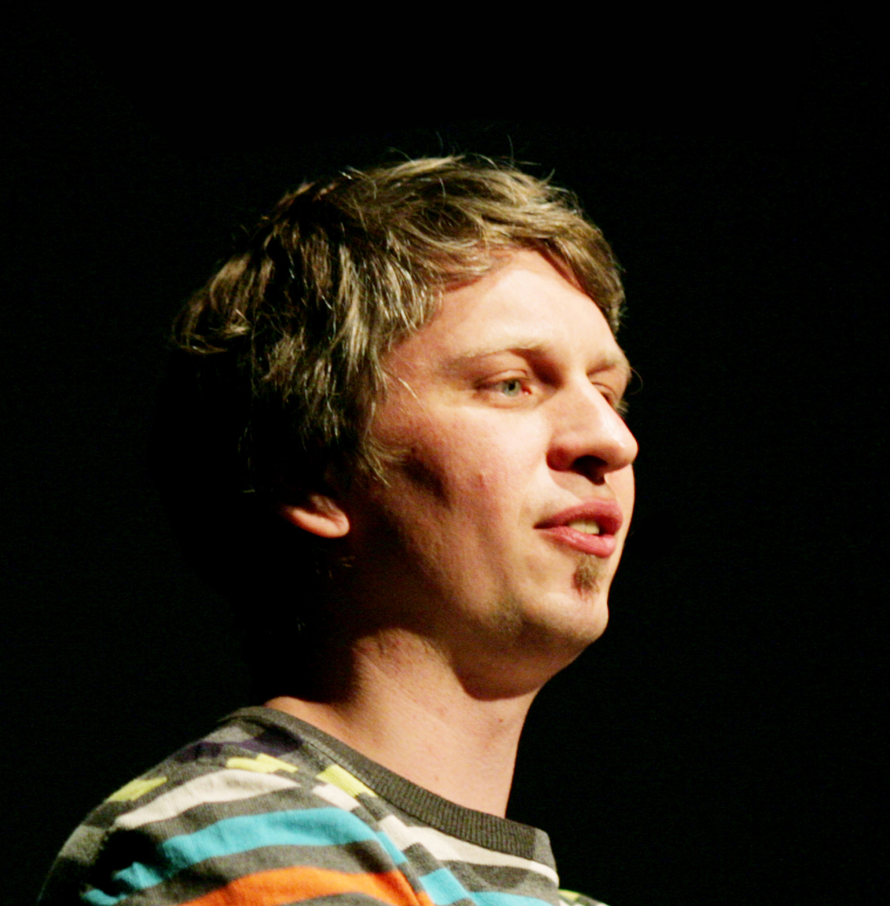

In February, many internet users search for nachos, chocolates, and strawberries. During the next month, they search for grasshopper cocktails, beer, and cabbage.
How do we know this?
Thank the Rhythm of Food project. The Rhythm of Food is a partnership between the Google News Lab and Truth & Beauty, a data visualization lab founded by Moritz Stefaner. The site collects source data from Google Trends about what hungry, inquisitive eaters are searching for throughout the year.
 "When Google News Lab approached me to work with Google Trends data, it became clear early on that we wanted to investigate a complex cultural phenomenon through the lens of Google search queries,” Stefaner says. “Food was a natural choice – everybody eats, every day, and looking at food queries turned out to be an amazingly rich resource to explore all kinds of interesting cultural and social phenomena.”
Among the interesting phenomena is the discovery that people search for pumpkin spice lattes well before Halloween, with some looking as early as August.
Other queries also depend on the season – blueberries, for example, see a spike in searches between June and August, which is typically when they’re ripe and ready for picking.
"This visualization shows how something as simple as a search for food can reveal fascinating trends around how we think about what we eat." - Simon Rogers
Other foods and beverages such as spaghetti, beer, and tacos are popular throughout the entire year and don’t see a seasonal drop.
"“We show year-to-year trends through the coloring of the elements,” Stefaner says. “This allows you to see not only how consistent the seasonality is over the years, but also which foods are rising in popularity, and which are falling.”
“We want to work with the best designers to really push at what is possible with visual design,” Rogers says. “Google Trends data is huge – over 3 billion searches per day are made using Google – and incredibly honest. We wanted this visual to show how something as simple as a search for food could reveal fascinating trends around how we think about what we eat.”